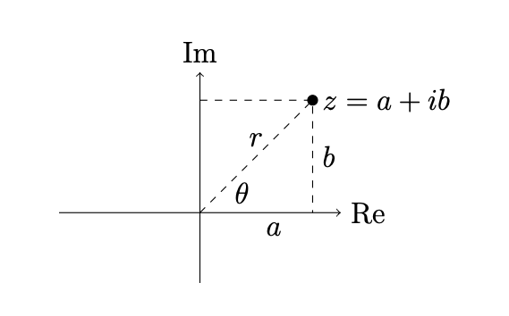

Complex Vectors
Complex Vectors#
A complex number can be represented in the form \(z = a + i b\) and also in polar form \(z = r e^{i \theta}\). The set of vectors of length \(n\) with complex entries is a complex vector space \(\mathbb{C}^n\) with inner product \(\langle \boldsymbol{u} , \boldsymbol{v} \rangle = \boldsymbol{u}^T \overline{\boldsymbol{v}}\).
A complex number is of the form
where \(i = \sqrt{-1}\) and \(a,b \in \mathbb{R}\). The complex number \(i\) satisfies \(i^2 = -1\), the real number \(a\) is called the real part of \(z\) and \(b\) is the imaginary part, and we write \(\mathrm{Re}(z) = a\) and \(\mathrm{Im}(z) = b\). The polar form of a complex number \(z = a + i b\) is
where \(r = \sqrt{a^2 + b^2}\) and \(\theta = \arctan(b/a)\). We visualize the set of complex numbers \(\mathbb{C}\) as a 2-dimensional real vector space:
{kind=link}
Euler’s formula is
Let \(z = a + ib\) and \(z = re^{i \theta}\) in polar form.
The modulus of \(z\) is \(|z| = r = \sqrt{a^2 + b^2}\).
The angle (or argument) of \(z\) is \(\angle z = \theta = \arctan(b/a)\) (or \(\mathrm{arg}(z) = \theta\)).
The conjugate of \(z\) is \(\overline{z} = a - ib = re^{- i \theta}\).
The inverse of \(z \in \mathbb{C}\) is given by
Proof. Let \(z = a + ib\). Then
and we see
The complex vector space \(\mathbb{C}^n\) is the set of vectors of length \(n\)
with complex entries \(v_1, \dots, v_n \in \mathbb{C}\). The conjugate of a vector \(\boldsymbol{v} \in \mathbb{C}^n\) is given by the conjugate of each entry
The standard inner product of vectors \(\boldsymbol{u},\boldsymbol{v} \in \mathbb{C}^n\) is
Let \(\boldsymbol{u} , \boldsymbol{v} \in \mathbb{C}^n\) and let \(c \in \mathbb{C}\).
\(\langle c \, \boldsymbol{u} , \boldsymbol{v} \rangle = c \, \langle \boldsymbol{u} , \boldsymbol{v} \rangle\)
\(\langle \boldsymbol{u} , c \, \boldsymbol{v} \rangle = \overline{c} \, \langle \boldsymbol{u} , \boldsymbol{v} \rangle\)
\(\langle \boldsymbol{u} , \boldsymbol{v} \rangle = \overline{\langle \boldsymbol{v} , \boldsymbol{u} \rangle}\)
\(\langle \boldsymbol{v} , \boldsymbol{v} \rangle \geq 0\) for all \(\boldsymbol{v}\), and \(\langle \boldsymbol{v} , \boldsymbol{v} \rangle = 0\) if and only if \(\boldsymbol{v} = \boldsymbol{0}\) is the zero vector.
The norm \(\boldsymbol{v} \in \mathbb{C}^n\) is
Complex vectors \(\boldsymbol{u} , \boldsymbol{v} \in \mathbb{C}^n\) are orthogonal if \( \langle \boldsymbol{u} , \boldsymbol{v} \rangle = 0\).
The conjugate transpose of a complex matrix \(A\) is \(A^* = \overline{A}^T\). Note that \(\langle A \boldsymbol{u} , \boldsymbol{v} \rangle = \langle \boldsymbol{u} , A^* \boldsymbol{v} \rangle\)
A complex matrix \(A\) is hermitian if \(A = A*\).
If \(A\) is hermitian then \(\langle A \boldsymbol{u} , \boldsymbol{v} \rangle = \langle \boldsymbol{u} , A \boldsymbol{v} \rangle\) for all \(\boldsymbol{u} , \boldsymbol{v} \in \mathbb{C}^n\).
A complex matrix \(A\) is unitary if \(A^{-1} = A^*\).
If \(A\) is unitary then \(\langle A \boldsymbol{u} , A \boldsymbol{v} \rangle = \langle \boldsymbol{u} , \boldsymbol{v} \rangle\) for all \(\boldsymbol{u} , \boldsymbol{v} \in \mathbb{C}^n\).